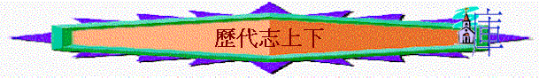

[ Home ] [ 經卷課程 ] [ 查經資料 ] [ 栽培課程 ] [ 事奉培訓 ] [ 聚會資源 ] [ 佈道資源 ] [ 胸懷普世 ] [ 異端異教 ] [ 信息分享 ] [ 專題研究 ] [ 祈禱專題 ] [ 詩歌簡譜 ] [ 動畫之廊 ] [ 輔導關懷 ] [ 站長聯絡 ]
目的:
內容:
用主日學直接教授形式, 講解歷代志上下
歷代志上下緒論 代上1-3 代上4-6 代上7-10 代上11-17:2 代上11-17:2 代上17:3-21:31 代上22-29:21 代下1-9 代下10-16 代下17-26 代下27-36